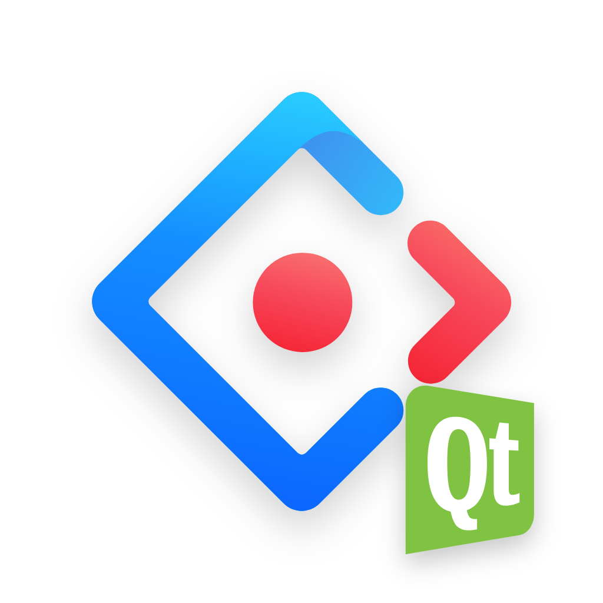
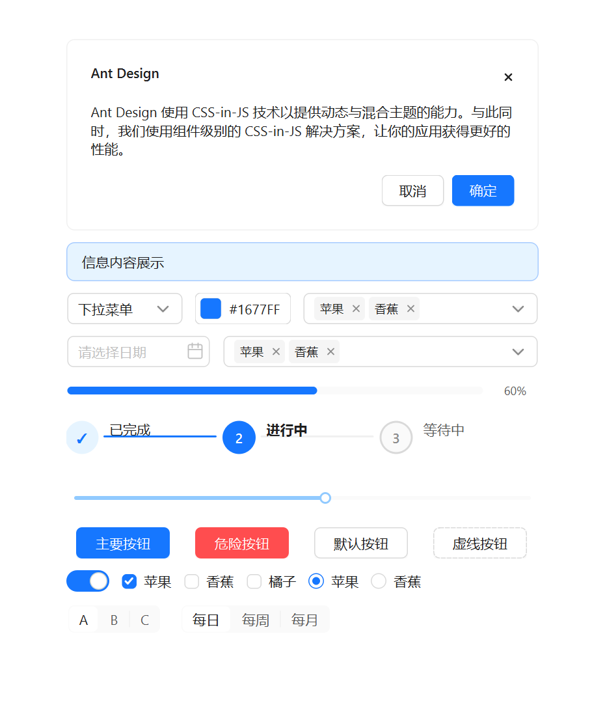
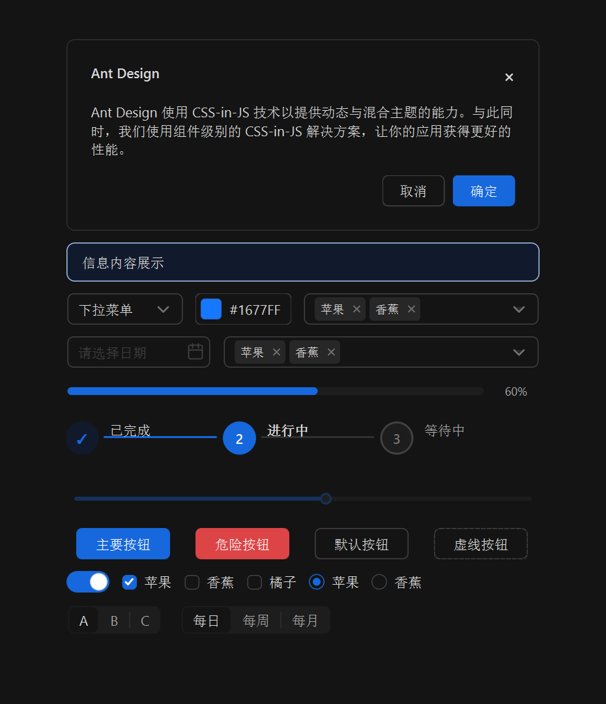

原生 Qt Widgets
输出 C++ 控件库，可作为静态库或动态库集成到现有 Qt 工程。

qt-ant-design参考 Ant Design 官网的文档层级组织站点：先给出清晰入口，再提供组件索引、开发指南、设计准则和兼容性说明。
输出 C++ 控件库，可作为静态库或动态库集成到现有 Qt 工程。
使用 token、状态、间距、圆角和动效对齐 Ant Design 的桌面化表达。
CMake 自动识别 Qt 版本，并覆盖 Qt5.15.2 与 Qt6 的视觉和度量差异。
额外提供 AntWindow、AntDialog、AntFileDialog、Dock、Ribbon、Nav 等桌面组件。
示例程序覆盖所有公开组件，截图资源会跟随站点一起发布。


组件页提供完整搜索、截图、头文件、继承关系、属性、方法、slots、signals 和共享枚举说明。
围绕“怎么接入、怎么设计、怎么验证”补齐组件总览之外的页面。
CMake 集成、初始化入口、示例程序和安装包使用方式。
主题 token、QProxyStyle 绘制策略、组件分类和桌面扩展原则。
Qt5/Qt6、高 DPI、视觉对齐和自动化测试覆盖。
104 个 API 类、19 个 Qt 风格别名、57 个共享枚举。
站点生成时间：2026-06-01。发布目标：http://www.sorrowfeng.top/qt-ant-design/